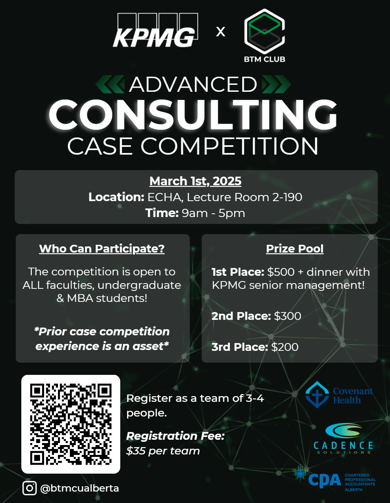
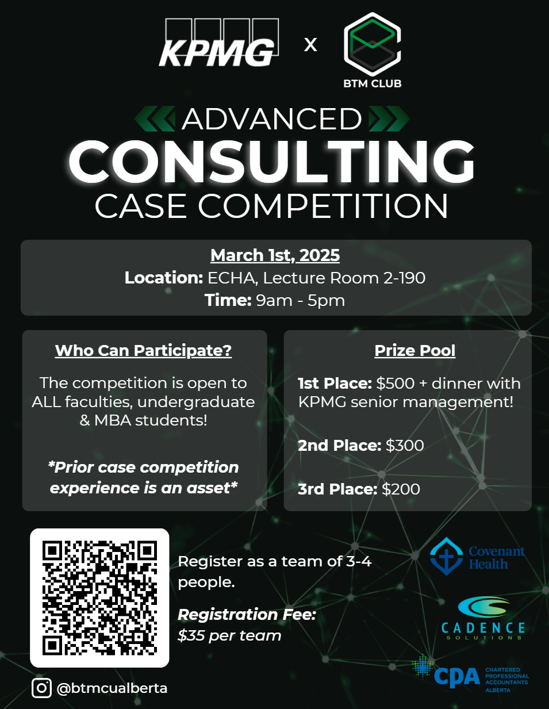
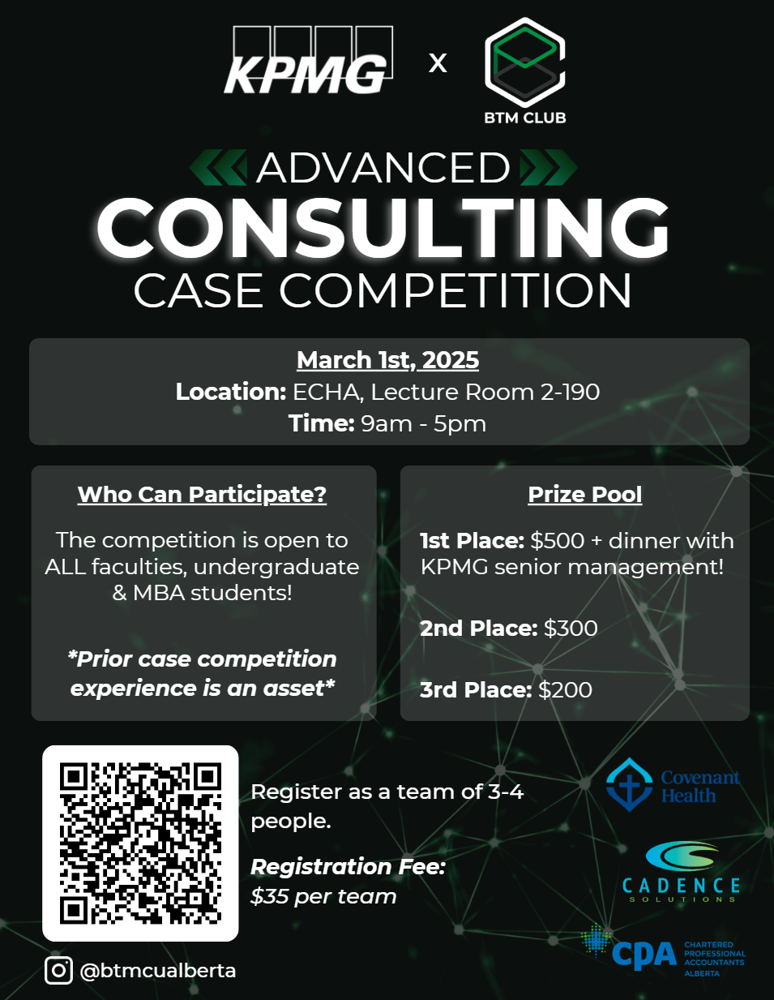

Divulgação de Resultados de Pesquisa
Universidade Federal do Rio Grande do Norte
| 
|
Divulgação de Resultados de PesquisaUniversidade Federal do Rio Grande do Norte |

Revisado em 15 de Maio de 2025

| Dia | Horário |
| 02 de Junho (Segunda) | 13:00-14:30 |
| 04 de Junho (Quarta) | 13:00-14:30 |
| 06 de Junho (Sexta) | 13:00-14:30 |
| 09 de Junho (Segunda) | 13:00-14:30 |
| 11 de Junho (Quarta) | 13:00-14:30 |
| 13 de Junho (Sexta) | 13:00-14:30 |
Local: Auditório do Núcleo de Pesquisa e Inovação em Tecnologia da Informação - nPITI
Instrutor: J. Nelson Amaral

A divulgação e publicação de novas idéias e de resultados de investigação científica é de responsibilidade de todo pesquisador. Esta divulgação toma muitos formatos, incluindo manuscritos submetidos para conferências e periódicos, notas para a imprensa, apresentações formais em conferências, workshops, seminários, mini cursos, mídia social.
Este curso esta aberto a alunos de quaisquer áreas de Ciência e Tecnologia. Podem participar alunos no ultimo ano de graduação, em qualquer nivel de pós-graduação, e pós-doutores.
Tipicamente estas apresentações contém uma sumarização de idéias e uma lista de resultados de pesquisa. Frequentemente muitos resultados experimentais precisam ser agregados em poucos números para embasar a lista de contribuições apresentadas como resultados. Um dos objetivos deste curso é analisar os métodos que devem ser utilizados para computar estas agregações e os cuidados que se deve ter ao escrever uma lista de contribuições. O curso vai analisar vários erros que são usualmente cometidos por pesquisadores ao criar, apresentar e sumarizar, e também na criação de gráficos e tabelas. Serão também vistos erros comuns na escrita de sumários de contribuições científicas.
Este curso também vai cobrir métodos de apresentação oral. Tanto apresentações longas no formato de uma palestra ou uma aula, como apresentações de duração muito curta em que somente os pontos mais relevantes podem ser mencionados.
O curso vai ter o formato de seminário, com discussão de artigos que tratam de metodologia experimental e de técnicas de apresentação.
O curso também vai discutir as melhores práticas em relação ao processo de revisão de artigos. Tanto do ponto de vista de um autor que submete um manuscrito para revisão, como de um revisor.
Este artigo reporta sobre uma versão anterior do curso: Departamento de Ciências da Computação (UFMG) e Universidade de Alberta: parceria de sucesso e reflexão sobre como cientistas falam sobre resultados de pesquisa

Adicione o artigo que voce vai revisar nesta pasta: pasta para artigos
Para dar nome ao arquivo contendo o artigo, use o último nome do primeiro autor, seguido da sigla da conferència ou do periódico, seguido dos dois últimos digitos do ano, e depois seguido de um hiphen, o seu primeiro nome, um hiphen, o seu ultimo nome, e .pdf
Exemplos:
Bruno Coutinho, Diogo Sampaio, Fernando Magno Quintao Pereira, Wagner Meira Jr., Divergence analysis and optimizations, International Conference on Parallel Architectures and Compilation Techniques, Gavelston, TX, USA, October, 2011.
Se o Nelson Amaral for revisar este artigo, o nome arquivo deve ser: CoutinhoPACT11-Nelson-Amaral.pdf
Juan Salamanca, José Nelson Amaral and Guido Araújo, Using Hardware-Transactional-Memory Support to Implement Thread-Level Speculation, IEEE Transactions on Parallel and Distributed Systems, Vol. 29, Issue 2, February, 2018, pp. 466-480.
Se o Andrei Alvares fosse revisar este artigo, ele criaria o nome: SalamancaTPDS18-Andrei-Alvares.pdf
Coloque a sua revisão neste drive: pasta para revisões
O arquivo contendo a revisão deve ser um arquivo simples contendo ASCII characters. O nome destes archivos devem seguir o mesmo padrão acima, com a adicao the -rev ao nome do arquivo, conforme os exemplos:
CoutinhoPACT11-Nelson-Amaral-rev.pdf
SalamancaTPDS18-Andrei-Alvares-rev.pdf
Cada aluno vai preparar duas críticas a revisão de artigos que foram feitas por colegas. Esta crítica deve indicar em como a revisão seguiu os princípios discutidos em aula e em que aspéctos a revisão poderia ser melhorada.
Nesta planilha coloque o seu nome na frente de duas revisoes, que nao sejam a sua, que voce vai criticar.
Coloque a critica de revisao nesta pasta: pasta para critica de revisoes